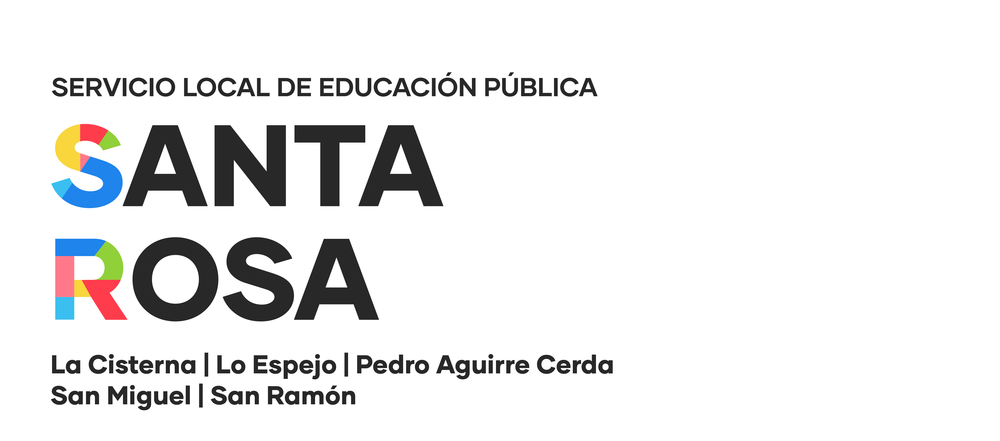

Sistemas de seguimiento e información
Contar con sistemas alineados con las orientaciones nacionales para evaluar procesos y resultados de establecimientos y jardines, conforme a los artículos 18 y 61.

El Departamento de Estudios, Monitoreo y Datos del Servicio Local de Educación Pública Santa Rosa promueve una cultura institucional basada en evidencia, seguimiento sistemático y uso responsable de la información para fortalecer la educación pública.
Nuestro propósito es consolidar una cultura institucional basada en el uso riguroso de la información y el monitoreo sistemático como herramientas de mejora continua. Desde esa función, el departamento define, organiza y sostiene sistemas de seguimiento que permitan observar procesos, resultados y capacidades de gestión con mayor claridad.
Contar con sistemas alineados con las orientaciones nacionales para evaluar procesos y resultados de establecimientos y jardines, conforme a los artículos 18 y 61.
Implementar seguimiento del avance de cada estudiante y promover una cultura de aprendizaje, autoevaluación y mejora continua basada en evidencia, de acuerdo con el artículo 19.
Generar, ordenar y difundir información clave para la gestión del servicio, fortaleciendo capacidades internas y de las comunidades educativas para tomar decisiones informadas.
Recopilamos, sistematizamos, analizamos y difundimos información sobre procesos y resultados de establecimientos educacionales y jardines infantiles, incluyendo trayectorias estudiantiles, desarrollo social y personal, resultados de aprendizaje e instrumentos de gestión.
Realizamos seguimiento a procesos y procedimientos internos del SLEP, especialmente en el apoyo técnico-pedagógico a escuelas y liceos, y aportamos análisis para la gestión estratégica y la rendición de cuentas del servicio.
Desarrollamos iniciativas para fomentar el uso de datos en la toma de decisiones, orientando a equipos y unidades educativas en el uso de plataformas, registro de información y resguardo de su calidad.
Dirige el Departamento de Estudios, Monitoreo y Datos como una unidad estratégica para la Dirección Ejecutiva, articulando seguimiento institucional, monitoreo de aprendizajes y uso de evidencia para apoyar la toma de decisiones.
Cientista Política de la Universidad Diego Portales, con conocimientos avanzados en análisis de datos y estadística. Maneja herramientas como R, SPSS y Stata para análisis cuantitativos, con interés en investigación y enfoques interdisciplinarios.
Sociólogo con experiencia colaborando con instituciones como el Instituto Nacional de Estadísticas, el Centro de Estudios Públicos y diversas universidades. Su trabajo aporta análisis, lectura territorial y experiencia aplicada en investigación.
El equipo trabaja desde el Servicio Local de Educación Pública Santa Rosa, apoyando procesos de seguimiento, monitoreo y análisis para la gestión institucional y pedagógica.